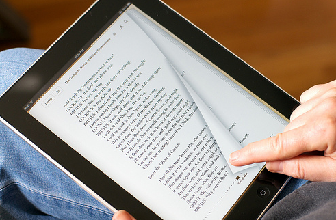

MY BLOG
Welcome to my blog

Compartiendo la pasión por los libros: clubs de lectura y lecturas conjuntas
Yolanda Galiana 19 May 2021
La experiencia de la lectura puede volverse mucho más enriquecedora si se comparte. Los clubs de lectura y las lecturas conjuntas son el punto de encuentro entre lectores que quieren ir un paso más allá de su propia interpretación del libro...
8 June, 2021
Diccionario de términos para entender las redes sociales literarias.
La necesidad de hablar sobre libros dio paso a la creación de comunidades lectoras. A lo largo del tiempo estos espacios evolucionaron y fueron adquiriendo un lenguaje propio...
FATIMA
My name is Fatima , a computer science student , I love to read a lot and write on different topics , welcome to my blog
Popular Posts
-
 FIRST BLOG
FIRST BLOG
-
SECOND BLOG
-
THIRD BLOG
Tags
READ BLOG TITLES WRITE BOOK MYBLOG IDEAS WRITER News READER Sports MORE